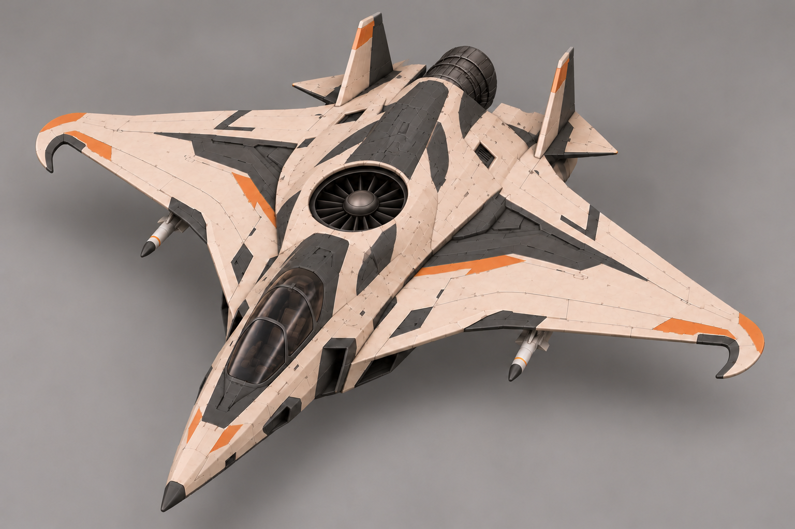
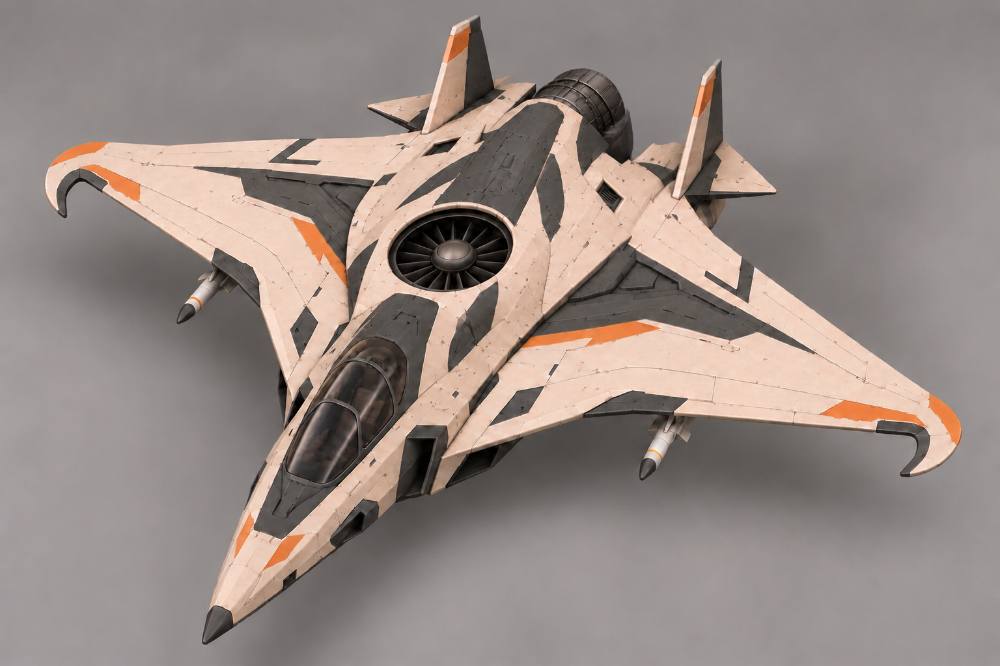
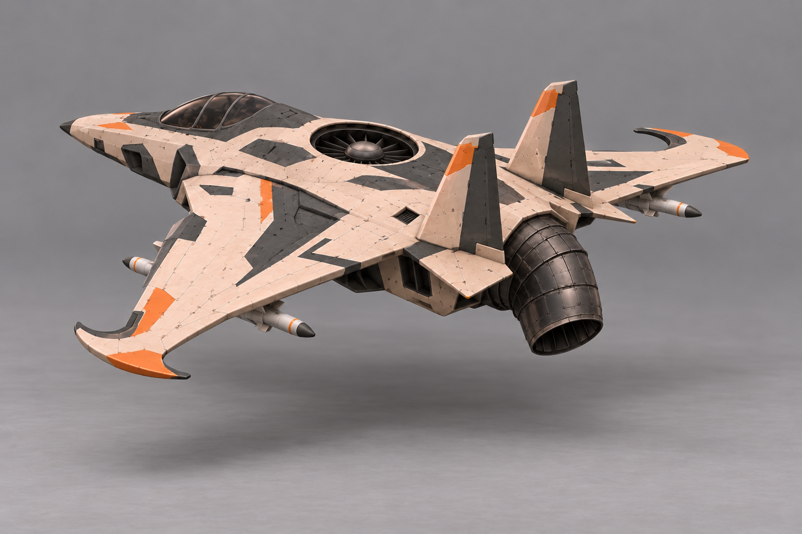

Сопло назад · основной вид

Текущая версия · острые законцовки
По уточнению автора: ОДНА большая подъёмная турбина по центру корпуса за кабиной и ОДНО заднее сопло по продольной оси. Сопло направлено назад и перенаправляется вниз для зависания. Прежняя схема с двумя турбинами и двумя соплами отменена. Крыло D и зеркальные серпы к кабине сохранены. Подвесные ракеты всё ещё предложение, не утверждённое вооружение.
Паспорт · Промпты · Предыдущий проход


Только ориентир сопла: оружие на этом художественном ракурсе ошибочно размножено/развёрнуто. Не использовать как вход вооружения или автоматический multiview.
